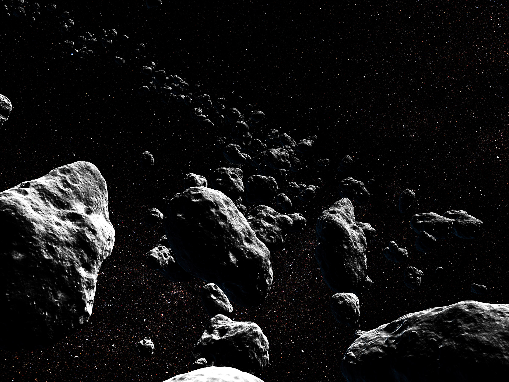
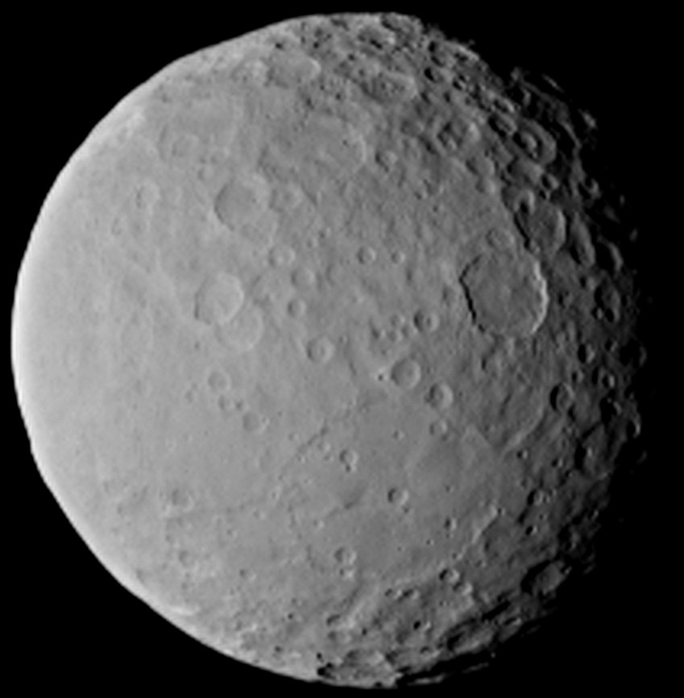
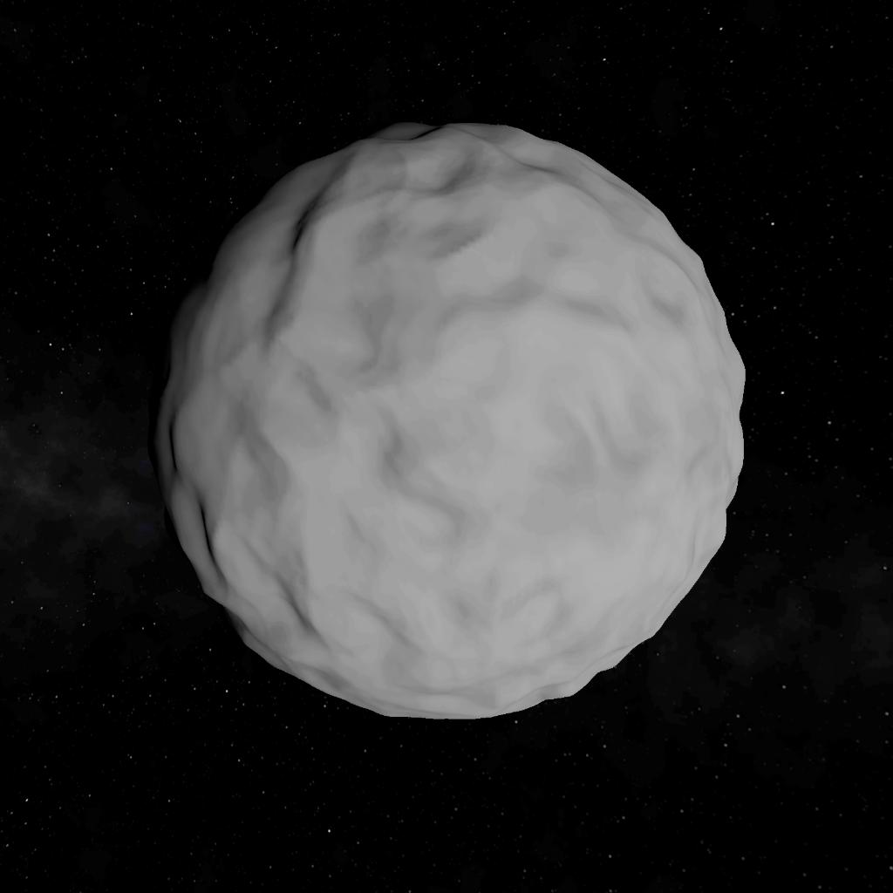
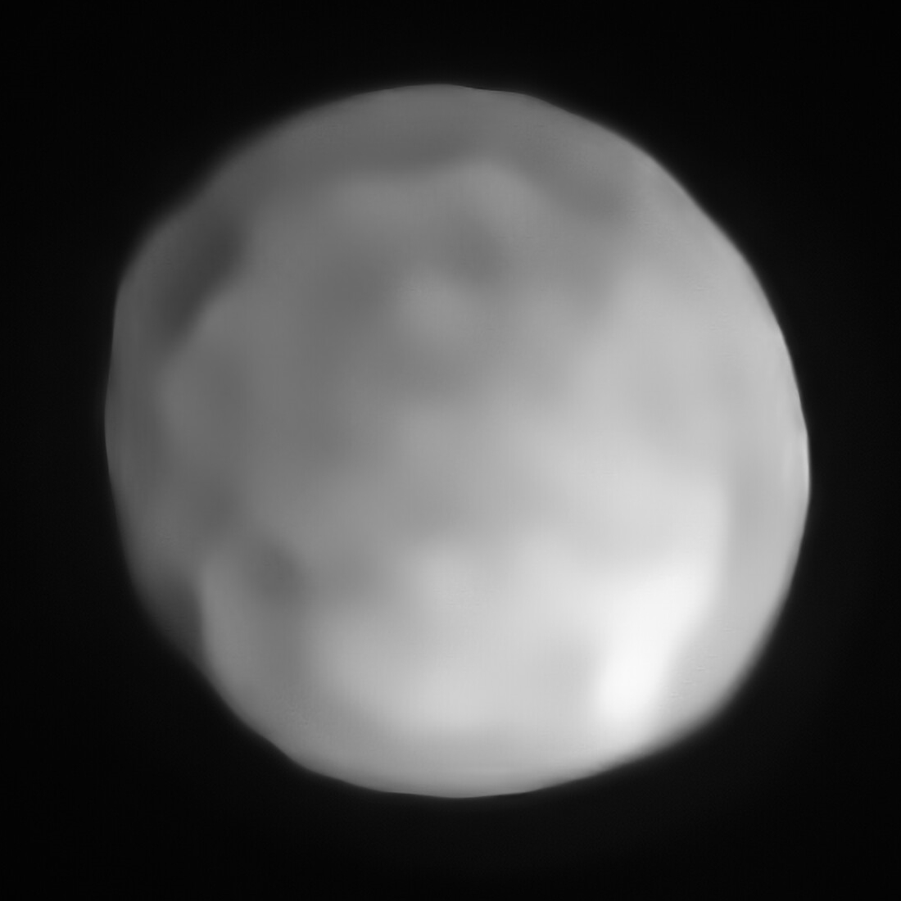
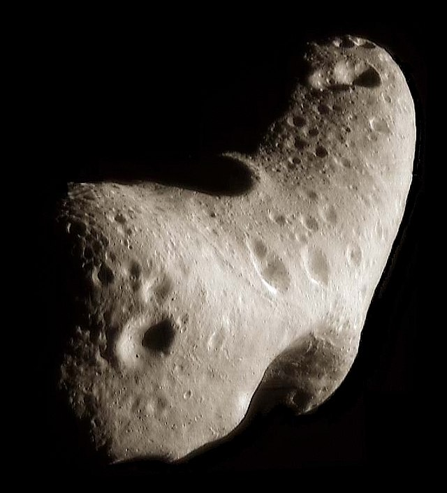

Asteroīdi
Asteroīdi ir mazi, akmeņaini objekti, kas riņķo ap Sauli mūsu Saules sistēmā. Tās ir agrīnās Saules sistēmas paliekas, un to izpēte var sniegt ieskatu planētu veidošanā un evolūcijā. To izmērs var variēt no maziem akmeņiem līdz pat 1000 kilometriem diametrā. Lielākā daļa asteroīdu ir atrodami asteroīdu joslā starp Marsa un Jupitera orbītām, taču dažus asteroīdus var atrast visā Saules sistēmā.
Cerera
Cerera ir lielākais asteroīds asteroīdu joslā, kura diametrs ir aptuveni 940 kilometri. Tā ir arī klasificēta kā pundurplanēta tās izmēra un sfēriskās formas dēļ. Tiek uzskatīts, ka Cererai ir akmeņains kodols un ledaina mantija, un tiek uzskatīts, ka tajā ir ievērojams ūdens daudzums.
Vesta
Vesta ir otrs lielākais asteroīds asteroīdu joslā, kura diametrs ir aptuveni 525 kilometri. Tas ir arī viens no spožākajiem no Zemes redzamajiem asteroīdiem. Tiek uzskatīts, ka Vesta ir protoplanēta, planētu celtniecības bloks, kas nekad nav pilnībā izveidojies par planētu.

Pallas
Pallas ir trešais lielākais asteroīds asteroīdu joslā, kura diametrs ir aptuveni 512 kilometri. Tas ir neregulāras formas asteroīds un ir klasificēts kā M tipa asteroīdu grupas loceklis.
Hygiea
Hygiea ir ceturtais lielākais asteroīds asteroīdu joslā, kura diametrs ir aptuveni 434 kilometri. Tas ir arī viens no lielākajiem C tipa asteroīdu grupas dalībniekiem.
Eross
Eross ir Zemei tuvs asteroīds, kuru 2000. gadā apmeklēja kosmosa kuģis NEAR Shoemaker. Tā diametrs ir aptuveni 34 kilometri, un tas ir S tipa asteroīdu grupas dalībnieks.
